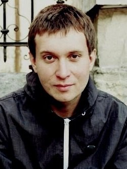

Смирський Роман Богданович
студент Національного університету харчових технологій
Ціль : Отримання глибоких практичних знань, придбання досвіду, постійне місце роботи, кар'єрний ріст
Посада : Інженер-проектувальник промислового холодильного устаткування
| Досвід роботи | |
|---|---|
| 2009/2010 | Оператор в Call centr «GVK Ukraine» |
| 2010/2011 | Студія «Київ звук», звукорежиссер (за сумісництвом з навчанням) |
| 2012/2014 | ТОВ «Інформатіо», менеджер (за сумісництвом з навчанням) |
| 2014/2015 | ТОВ «Базис», сервіс-інженер холодильного устаткування (за сумісництвом з навчанням) |
| 2015 | ООО «Holod Engineering» Інженер з промислових холодильних установок | Освіта |
| 2007 | Спеціалізована школа № 176 з поглибленим вивченням іспанської мови м. Києва |
| 2007/2011 | Коледж ресторанного господарства Національного університету харчових технологій. Спеціалізація: «Монтаж і обслуговування холодильно-компресорних машин та установок» Кваліфікація: технік-механік |
| 2011/2015 | Національний університет харчових технологій Спеціалізація: «Монтаж і обслуговування холодильно-компресорних машин та установок» | Курси и тренінги |
| 2013-2014 | Курс англійської мови навчального центру " London eye " |
Додакові відомості
Дата нарождення: 1992-02-13
Іноземні мови:
- Російська - вільно
- Іспанська – зі словником
- Англійська – зі словником
Водійські права : категорія B
Особисті відмінності
- Активна життєва позиція,цілеспрямованість
- Відповідальність, оперативність, оптимізм;
- Креативність, ініціативність, швидко навчаюсь.